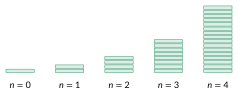

Le pliage d’une feuille
Activité 3.1 — plier une feuille
Une feuille de papier a une épaisseur de \(0{,}1\) mm. On la plie en deux, puis encore en deux, et ainsi de suite. On note \(t_{n}\) l’épaisseur (en mm) après \(n\) pliages; en particulier \(t_{0} = 0{,}1\).

- Complète le tableau (épaisseur en mm) :
| \(n\) | \(0\) | \(1\) | \(2\) | \(3\) | \(4\) | \(5\) | \(6\) |
|---|---|---|---|---|---|---|---|
| \(t_{n}\) | \(0{,}1\) | \(0{,}2\) | \(0{,}4\) | \(0{,}8\) | \(1{,}6\) | \(3{,}2\) | \(6{,}4\) |
Comment calculer \(t_{n}\) à partir de \(n\) ? \(t_{n} =\) \(0{,}1 \cdot 2^{n}\) mm.
Représente les premiers termes. Les points sont-ils alignés ?
Non : les points ne sont pas alignés, ils suivent une courbe qui monte de plus en plus vite (croissance exponentielle).
- Quelle épaisseur après \(10\) pliages ? \(t_{10} =\) \(0{,}1 \cdot 2^{10} =102{,}4\) mm \(\approx 10\) cm
Et après \(20\) pliages ? \(t_{20} =\) \(0{,}1 \cdot 2^{20} \approx 105\) m !
- La distance entre la Terre et la Lune vaut environ 400 000km. Combien de pliages faudrait-il réaliser pour atteindre cette distance? 42 pliage: \(t_{42} \approx 439804\) km